3.7 Momentum
Further Mechanics · impulse · collisions · restitution · oblique impact
考生需要能够：
- 使用 impulse-momentum equation；
- 对无外力系统使用 conservation of momentum；
- 使用 Newton’s experimental law 和 coefficient of restitution；
- 处理球与 fixed smooth plane、wall 或 barrier 的 impact；
- 处理 smooth spheres 的 oblique impact；
- 正确分解 line-of-centres 与 perpendicular components；
- 判断 kinetic-energy loss，并保持速度方向和符号一致。
1. 核心公式
1.1 Momentum and impulse
质量为 \(m\)、速度为 \(v\) 的粒子的 momentum 为
\[ \boxed{p=mv}. \]
Impulse is change in momentum:
\[ \boxed{J=\text{final momentum}-\text{initial momentum}}. \]
若力恒为 \(F\)、作用时间为 \(t\)，则 \(J=Ft\)。若力随时间变化，则
\[ \boxed{J=\int F\,dt}. \]
1.2 Conservation of momentum
对没有外力冲量的系统，按同一正方向写 signed velocities：
\[ \boxed{\text{total momentum before} = \text{total momentum after}}. \]
1.3 Newton’s experimental law
对于 direct impact，
\[ \boxed{e=\frac{\text{speed of separation}}{\text{speed of approach}}}, \qquad 0\le e\le1. \]
1.4 Impact with a smooth plane
平行于 plane 的速度分量不变；垂直于 plane 的速度分量反向并乘以 \(e\)：
\[ v\cos\beta=u\cos\alpha, \qquad v\sin\beta=e\,u\sin\alpha. \]
因此 kinetic-energy loss 为
\[ \boxed{\frac12mu^2(1-e^2)\sin^2\alpha}. \]
1.5 Oblique impact of smooth spheres
沿 line of centres 使用 momentum conservation 和 restitution；垂直方向没有 impulse，所以两球的 perpendicular components unchanged。
若碰撞前的 line components 为 \(u\cos\alpha\)、\(v\cos\beta\)，碰撞后的 line components 为 \(U,V\)，则
\[ m_Au\cos\alpha+m_Bv\cos\beta=m_AU+m_BV, \]
\[ V-U=e\bigl(u\cos\alpha-v\cos\beta\bigr), \]
并保留 perpendicular components \(u\sin\alpha\)、\(v\sin\beta\)。
2. Textbook Examples
Example 7.1 - Impulse on a tennis ball
A tennis player hits the ball as it is travelling towards her at \(10\ \mathrm{m\ s^{-1}}\) horizontally. Immediately after she hits it, the ball is travelling away from her at \(20\ \mathrm{m\ s^{-1}}\) horizontally. The mass of the ball is \(0.06\ \mathrm{kg}\). What force does the tennis player apply to the ball?
Show answer
The force cannot be found unless the impact time is known. The impulse can be found:
\[ J=mv-mu=0.06(20)-0.06(-10)=\boxed{1.8\ \mathrm{N\ s}}. \]
If the impact lasts \(0.1\ \mathrm s\),
\[ F=\frac{1.8}{0.1}=\boxed{18\ \mathrm N}. \]
If the impact lasts \(0.015\ \mathrm s\),
\[ F=\frac{1.8}{0.015}=\boxed{120\ \mathrm N}. \]
The average force is the constant force which, acting for the same time interval, would have the same impulse as the actual variable force.Example 7.2 - A ball rebounding from the ground
A ball of mass \(50\ \mathrm g\) hits the ground with a speed of \(4\ \mathrm{m\ s^{-1}}\) and rebounds with an initial speed of \(3\ \mathrm{m\ s^{-1}}\). The situation is modelled by assuming that the ball is in contact with the ground for \(0.01\ \mathrm s\) and that during this time the reaction force on it is constant.
(i) Find the average force exerted on the ball by the ground.
(ii) Find the loss in kinetic energy during the impact.
(iii) Which of the answers to parts (i) and (ii) would be affected by a change in the modelling assumption that the ball is only in contact with the ground for \(0.01\ \mathrm s\)?
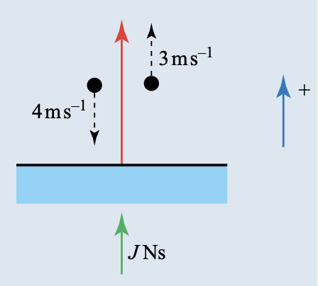
Show answer
(i) Take upwards as positive. The impulse from the ground is
\[ J=mv-mu=0.05(3)-0.05(-4)=0.35\ \mathrm{N\ s}. \]
Therefore the average force is
\[ F=\frac{J}{t}=\frac{0.35}{0.01}=\boxed{35\ \mathrm N\ upward}. \]
(ii)
\[ \begin{aligned} \text{initial K.E.}&=\frac12(0.05)(4^2)=0.400\ \mathrm J,\\ \text{final K.E.}&=\frac12(0.05)(3^2)=0.225\ \mathrm J. \end{aligned} \]
Hence the loss in kinetic energy is
\[ \boxed{0.175\ \mathrm J}. \]
(iii) The average force in part (i) would change, because it depends on the contact time. The kinetic-energy loss in part (ii) would not change.Example 7.3 - Constant force and impulse
A car of mass \(800\ \mathrm{kg}\) is pushed with a constant force of magnitude \(200\ \mathrm N\) for \(10\ \mathrm s\). The car starts from rest. Resistance to motion may be ignored.
(i) Find its speed at the end of the ten-second interval by using
(a) the impulse on the car;
(b) Newton’s second law.
(ii) Comment on your answers to part (i).
Show answer
(i)(a)
\[ J=Ft=200(10)=2000\ \mathrm{N\ s}=mv. \]
Thus
\[ \boxed{v=\frac{2000}{800}=2.5\ \mathrm{m\ s^{-1}}}. \]
(i)(b)
\[ 200=800a\quad\Longrightarrow\quad a=0.25\ \mathrm{m\ s^{-2}}. \]
Therefore
\[ v=u+at=0+0.25(10)=\boxed{2.5\ \mathrm{m\ s^{-1}}}. \]
(ii) Both methods give the same answer. The constant-acceleration method is valid here because the force, and hence the acceleration, is constant.Example 7.4 - Conservation of momentum and impulse
Ball A of mass \(0.5\ \mathrm{kg}\) travelling at \(3\ \mathrm{m\ s^{-1}}\) hits stationary ball B of mass \(0.2\ \mathrm{kg}\). After the collision, ball A is stationary.
(i) Draw diagrams showing the situation before and after the collision.
(ii) Find the speed of ball B after the collision.
(iii) Find the impulse on each ball.
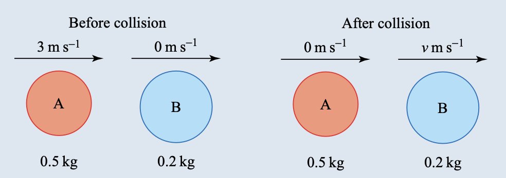
Show answer
(i) The before-and-after velocities are shown in the figure.
(ii) Conservation of momentum gives
\[ 0.5(3)+0.2(0)=0.5(0)+0.2v. \]
Hence
\[ \boxed{v=7.5\ \mathrm{m\ s^{-1}}}. \]
(iii)
\[ \boxed{J_A=0.5(0)-0.5(3)=-1.5\ \mathrm{N\ s}}, \]
so the impulse on A is \(1.5\ \mathrm{N\ s}\) opposite to its initial motion. For B,
\[ \boxed{J_B=0.2(7.5)-0.2(0)=1.5\ \mathrm{N\ s}}, \]
in the original direction of motion.Example 7.5 - Newton’s experimental law
A direct collision takes place between two snooker balls. The white cue ball, travelling at \(2\ \mathrm{m\ s^{-1}}\), hits a stationary red ball. After the collision, the red ball moves in the direction in which the cue ball was moving before the collision. The balls have equal mass and the coefficient of restitution between the balls is \(0.6\). Predict the velocities of the two balls after the collision.
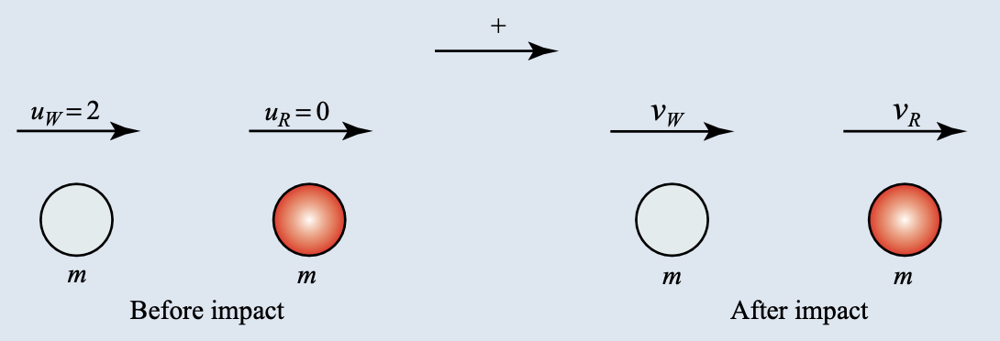
Show answer
Let the final velocities of the white and red balls be \(v_W\) and \(v_R\).
- Speed of approach \(=2\).
- Newton’s experimental law gives \(v_R-v_W=0.6(2)=1.2\).
- Conservation of momentum gives \(v_W+v_R=2\).
Solving,
\[ \boxed{v_W=0.4\ \mathrm{m\ s^{-1}}},\qquad \boxed{v_R=1.6\ \mathrm{m\ s^{-1}}}. \]
Both balls move in the original direction of the cue ball.Example 7.6 - Collision of two unequal masses
An object A of mass \(m\) moving with speed \(2u\) hits an object B of mass \(2m\) moving with speed \(u\) in the opposite direction to A. The coefficient of restitution is \(e\).
(i) Show that the ratio of speeds remains unchanged whatever the value of \(e\).
(ii) Find the loss of kinetic energy in terms of \(m\), \(u\) and \(e\).
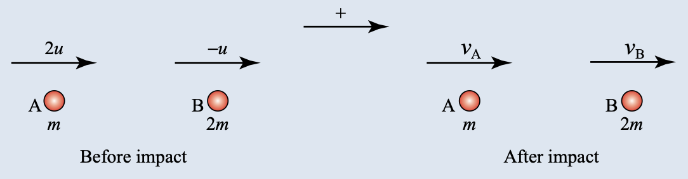
Show answer
Let the final velocities be \(v_A\) and \(v_B\), positive in A’s original direction.
(i) Newton’s experimental law and conservation of momentum give
\[ v_B-v_A=3eu, \qquad v_A+2v_B=0. \]
Therefore
\[ v_B=eu,\qquad v_A=-2eu. \]
The initial speed ratio is \(2u:u=2:1\) and the final speed ratio is \(2eu:eu=2:1\) (for \(e\ne0\)).
(ii) Initial kinetic energy:
\[ \frac12m(2u)^2+\frac12(2m)u^2=3mu^2. \]
Final kinetic energy:
\[ \frac12m(2eu)^2+\frac12(2m)(eu)^2=3me^2u^2. \]
Hence the loss is
\[ \boxed{3mu^2(1-e^2)}. \]Example 7.7 - Oblique impact with a smooth plane
A ball of mass \(0.2\ \mathrm{kg}\) moving at \(12\ \mathrm{m\ s^{-1}}\) hits a smooth horizontal plane at an angle of \(75^\circ\) to the horizontal. The coefficient of restitution is \(0.5\). Find
(i) the impulse on the ball;
(ii) the impulse on the plane;
(iii) the kinetic energy lost by the ball.
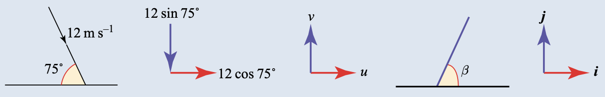
Show answer
Resolve parallel and perpendicular to the plane. The parallel component is unchanged. The perpendicular component after impact is \(0.5(12\sin75^\circ)=6\sin75^\circ\).
(i)
\[ \mathbf J=0.2\begin{pmatrix}12\cos75^\circ\\6\sin75^\circ\end{pmatrix} -0.2\begin{pmatrix}12\cos75^\circ\\-12\sin75^\circ\end{pmatrix} =\begin{pmatrix}0\\3.6\sin75^\circ\end{pmatrix}. \]
Therefore
\[ \boxed{\mathbf J=3.48\,\mathbf j\ \mathrm{N\ s}}. \]
(ii) By Newton’s third law, the impulse on the plane is
\[ \boxed{-3.48\,\mathbf j\ \mathrm{N\ s}}. \]
(iii)
\[ \begin{aligned} \text{initial K.E.}&=\frac12(0.2)(12^2)=14.4\ \mathrm J,\\ \text{final K.E.}&=\frac12(0.2)\left[(12\cos75^\circ)^2+(6\sin75^\circ)^2\right]=4.32\ \mathrm J. \end{aligned} \]
Thus the loss is \(\boxed{10.1\ \mathrm J}\).Example 7.8 - Rebound from a smooth plane
A ball moving with speed \(10\ \mathrm{m\ s^{-1}}\) hits a smooth horizontal plane at an angle of \(60^\circ\) to the horizontal. The coefficient of restitution between the ball and the surface is \(\frac13\). The ball rebounds with speed \(v\) at an angle \(\beta\) with the surface.
(i) Find \(v\).
(ii) Find \(\beta\).
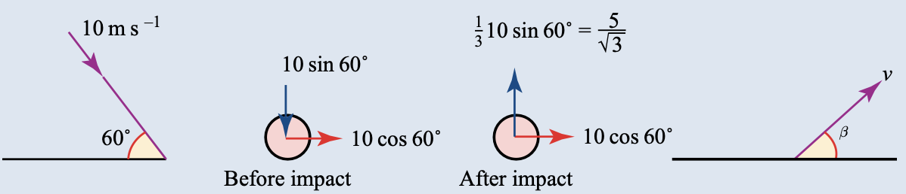
Show answer
The horizontal component remains \(10\cos60^\circ=5\). The vertical component after impact is
\[ \frac13(10\sin60^\circ)=\frac5{\sqrt3}. \]
Hence
\[ v=\sqrt{5^2+\left(\frac5{\sqrt3}\right)^2}=\boxed{\frac{10}{\sqrt3}=5.77\ \mathrm{m\ s^{-1}}}. \]
Also
\[ \tan\beta=\frac{5/\sqrt3}{5}=\frac1{\sqrt3}, \]
so \(\boxed{\beta=30^\circ}\).Example 7.9 - Oblique collision of equal spheres
In a game of snooker the cue ball, moving with speed \(2\ \mathrm{m\ s^{-1}}\), strikes a stationary red ball. The cue ball is moving at an angle of \(60^\circ\) to the line of centres of the two balls. Both balls are smooth and have the same mass \(m\). The coefficient of restitution between the balls is \(\frac12\). Find the velocities of the two balls after impact.
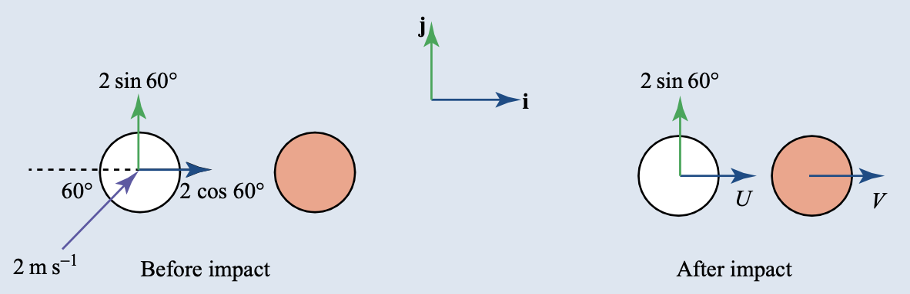
Show answer
Perpendicular components are unchanged. Along the line of centres, let the final components be \(U\) for the cue ball and \(V\) for the red ball.
\[ U+V=2\cos60^\circ=1, \]
and Newton’s law gives
\[ V-U=\frac12(2\cos60^\circ)=\frac12. \]
Therefore \(U=\frac14\) and \(V=\frac34\).
Thus the red ball has velocity
\[ \boxed{\frac34\mathbf i\ \mathrm{m\ s^{-1}}}, \]
and the cue ball has velocity
\[ \boxed{\left(\frac14\mathbf i+\sqrt3\mathbf j\right)\ \mathrm{m\ s^{-1}}}. \]
The cue ball’s speed is \(\sqrt{49/16}=\frac74\ \mathrm{m\ s^{-1}}\) and its direction is \(\arctan(4\sqrt3)\approx81.8^\circ\) to the line of centres.Example 7.10 - Oblique collision of unequal spheres
A smooth sphere A of mass \(2m\), moving with speed \(4\ \mathrm{m\ s^{-1}}\), collides with a smooth sphere B of mass \(m\) moving with speed \(2\ \mathrm{m\ s^{-1}}\). The velocity of A immediately before impact makes an angle of \(45^\circ\) to the line of centres. The velocity of B immediately before impact is at \(90^\circ\) to the line of centres. The coefficient of restitution is \(0.6\).
(i) Draw a diagram showing the situation before and after the collision.
(ii) Calculate the velocities of the two spheres after impact.
(iii) Calculate the loss of kinetic energy sustained by the system during the impact.
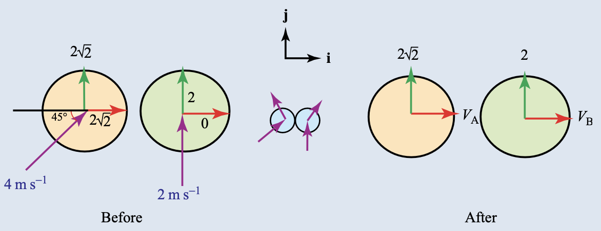
Show answer
The perpendicular components are unchanged: \(2\sqrt2\) for A and \(2\) for B. Let \(V_A,V_B\) be the final components along the line of centres.
(i) The component equations are
\[ 4\sqrt2=2V_A+V_B, \qquad 2\sqrt2(0.6)=V_B-V_A. \]
(ii) Solving,
\[ V_A=\frac23(4-2e)=1.31\ldots, \qquad V_B=\frac43(1+e)\sqrt2=3.01\ldots. \]
Hence
\[ \boxed{\mathbf v_A=1.31\,\mathbf i+2\sqrt2\,\mathbf j\ \mathrm{m\ s^{-1}}}, \]
\[ \boxed{\mathbf v_B=3.01\,\mathbf i+2\,\mathbf j\ \mathrm{m\ s^{-1}}}. \]
A has speed \(3.12\ \mathrm{m\ s^{-1}}\) at \(65.0^\circ\) to the line of centres. B has speed \(3.62\ \mathrm{m\ s^{-1}}\) at \(33.5^\circ\).
(iii) The initial kinetic energy is \(18m\) and the final kinetic energy is \(16.29m\). Therefore
\[ \boxed{\text{loss}=1.71m\ \mathrm J}. \]3. 教材 Chapter 7 Exercises
本章 Exercise 题目中没有明确标注 Cambridge International AS & A Level Mathematics 的题目，因此本页面不加入未标注来源的 Exercise。教材中的 Cambridge International 标注题目会按同一规则保留，并在原题有图时加入独立题图。
4. Paper 3 真题题库
本节收录 2021–2025 Paper 3 中直接涉及 impulse、momentum、coefficient of restitution、impact、barrier、smooth plane 和 oblique collision 的相关真题。题目保留英文原题和完整 (a)、(b)、(c) 小问，答案按 Mark Scheme 分点写清楚。
Paper 3 questions
The following are the Paper 3 questions from 2021-2025 whose main ideas are impulse, conservation of momentum, Newton’s experimental law, impact with a smooth plane or barrier, or oblique impact of smooth spheres. The original English wording and every sub-question are retained. Each answer is expanded into mark-scheme points.
2021 May/June · 9231/31 and 9231/32 · Question 6
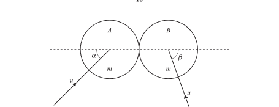
Two uniform smooth spheres A and B of equal radii each have mass \(m\). The two spheres are each moving with speed \(u\) on a horizontal surface when they collide. Immediately before the collision, A’s direction of motion makes an angle \(\alpha\) with the line of centres, and B’s direction of motion makes an angle \(\beta\) with the line of centres. The coefficient of restitution between the spheres is \(\frac13\) and \(2\cos\beta=\cos\alpha\).
(a) Show that the direction of motion of A after the collision is perpendicular to the line of centres.
The total kinetic energy of the spheres after the collision is \(\frac34mu^2\).
(b) Find the value of \(\alpha\).
Show answer
(a) Let \(v_1,v_2\) be the components after impact along the line of centres.
- Conservation of momentum: \[mv_1+mv_2=mu\cos\alpha-mu\cos\beta.\]
- Newton’s experimental law: \[v_2-v_1=\frac13u(\cos\beta+\cos\alpha).\]
- Using \(2\cos\beta=\cos\alpha\) gives \(v_1=0\).
Therefore A has no component along the line of centres and moves perpendicular to it.
(b) Since \(v_1=0\), \(v_2=u\cos\alpha=u\cos\beta\). Use the unchanged perpendicular components:
\[ \frac12m(u\sin\alpha)^2+\frac12m\left[v_2^2+(u\sin\beta)^2\right]=\frac34mu^2. \]
Substitution of \(\cos\alpha=2\cos\beta\) gives \(\sin\alpha=\frac1{\sqrt2}\) and hence
\[ \boxed{\alpha=45^\circ}. \]2021 May/June · 9231/33 · Question 6
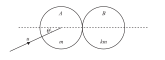
Two uniform smooth spheres A and B of equal radii have masses \(m\) and \(km\) respectively. Sphere A is moving with speed \(u\) on a smooth horizontal surface when it collides with sphere B which is at rest. Immediately before the collision, A’s direction of motion makes an angle \(i\) with the line of centres. The coefficient of restitution between the spheres is \(\frac13\).
(a) Show that the speed of B after the collision is \(\dfrac{4u\cos i}{3(1+k)}\).
70% of the total kinetic energy of the spheres is lost as a result of the collision.
(b) Given that \(\tan i=\frac13\), find the value of \(k\).
Show answer
(a) Let \(v_1,v_2\) be the components after impact along the line of centres.
- Momentum: \(mv_1+kmv_2=mu\cos i\).
- Restitution: \(v_2-v_1=\frac13u\cos i\).
- Solving gives \[\boxed{v_2=\frac{4u\cos i}{3(1+k)}}.\]
(b)
- The other component of A is unchanged, \(u\sin i\).
- The remaining 30% of the initial kinetic energy gives \[kmv_2^2+m\left(v_1^2+u^2\sin^2i\right)=0.3mu^2.\]
- Substitute \(v_1=\dfrac{(3-k)u\cos i}{3(1+k)}\), \(\tan i=\frac13\), and simplify: \[k^2-6k-7=0.\]
- Since \(k>0\), \(\boxed{k=7}\).
2021 October/November · 9231/31 · Question 7
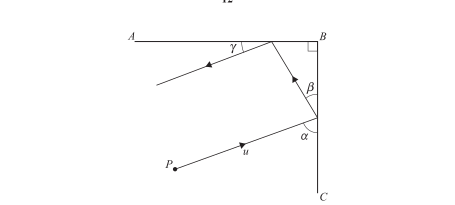
The smooth vertical walls \(AB\) and \(CB\) are at right angles to each other. A particle P is moving with speed \(u\) on a smooth horizontal floor and strikes wall \(CB\) at an angle \(\alpha\). It rebounds at an angle \(\beta\) to wall \(CB\). The particle then strikes wall \(AB\) and rebounds at an angle \(\gamma\) to that wall. The coefficient of restitution between each wall and P is \(e\).
(a) Show that \(\tan\beta=e\tan\alpha\).
(b) Express \(\gamma\) in terms of \(\alpha\) and explain what this result means about the final direction of motion of P.
As a result of the two impacts the particle loses \(\frac89\) of its initial kinetic energy.
(c) Given that \(\alpha+\beta=90^\circ\), find \(e\) and \(\tan\alpha\).
Show answer
(a) Resolve parallel and perpendicular to \(CB\):
- \(u\cos\alpha=v\cos\beta\);
- \(eu\sin\alpha=v\sin\beta\).
Dividing gives \(\boxed{\tan\beta=e\tan\alpha}\).
(b) At the second wall the corresponding equations give \(\tan\gamma=1/\tan\alpha\), so
\[ \boxed{\gamma=90^\circ-\alpha}. \]
The two components of velocity have both been reversed, so the final direction is parallel to, but opposite to, the initial direction.
(c) The final kinetic energy is \(e^2\) times the initial kinetic energy. Hence \(e^2=1/9\) and \(\boxed{e=1/3}\). Since \(\tan\beta=\cot\alpha\),
\[ e\tan^2\alpha=1\quad\Longrightarrow\quad\boxed{\tan\alpha=\sqrt3}. \]2021 October/November · 9231/32 · Question 5
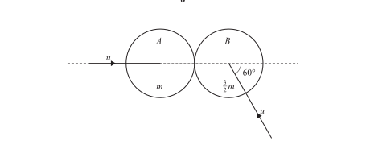
Two uniform smooth spheres A and B of equal radii have masses \(m\) and \(\frac32m\) respectively. The two spheres are each moving with speed \(u\) on a horizontal surface when they collide. Immediately before the collision A’s direction of motion is along the line of centres, and B’s direction of motion makes an angle of \(60^\circ\) with the line of centres. The coefficient of restitution between the spheres is \(\frac23\).
(a) Find the angle through which the direction of motion of B is deflected by the collision.
(b) Find the loss in the total kinetic energy of the system as a result of the collision.
Show answer
(a) Let \(v_1,v_2\) be the final line-of-centres components.
- Momentum: \[mv_1+\frac32mv_2=-\frac32mu\cos60^\circ+mu.\]
- Restitution: \[v_2-v_1=\frac23\left(u+u\cos60^\circ\right)=u.\]
- Thus \(v_1=-\frac12u\) and \(v_2=\frac12u\).
- The unchanged component of B is \(u\sin60^\circ=\frac{\sqrt3}{2}u\).
B therefore moves at \(60^\circ\) above the line of centres, so the deflection is \(\boxed{60^\circ}\).
(b)
\[ K_{\rm before}=\frac12mu^2+\frac12\left(\frac32m\right)u^2=\frac54mu^2, \]
\[ K_{\rm after}=\frac12m\left(\frac u2\right)^2+\frac12\left(\frac32m\right)\left[\left(\frac u2\right)^2+\left(\frac{\sqrt3u}{2}\right)^2\right]=\frac78mu^2. \]
Hence the loss is \(\boxed{\frac38mu^2}\).2022 May/June · 9231/31 and 9231/32 · Question 6
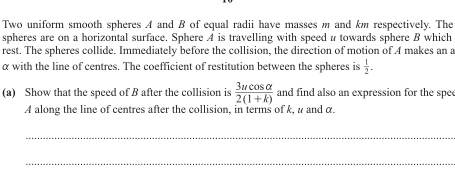
Two uniform smooth spheres A and B of equal radii have masses \(m\) and \(km\) respectively. Sphere A is travelling with speed \(u\) towards sphere B which is at rest. Immediately before the collision, the direction of motion of A makes an angle \(\alpha\) with the line of centres. The coefficient of restitution between the spheres is \(\frac12\).
(a) Show that the speed of B after the collision is \(\dfrac{3u\cos\alpha}{2(1+k)}\) and find the expression for the speed of A along the line of centres after the collision.
After the collision, the kinetic energy of A is equal to the kinetic energy of B.
(b) Given that \(\tan\alpha=\frac23\), find the possible values of \(k\).
Show answer
(a) The perpendicular component of A is unchanged. Along the line of centres:
\[ mu\cos\alpha=mU+kmV, \qquad V-U=\frac12u\cos\alpha. \]
Therefore
\[ \boxed{V=\frac{3u\cos\alpha}{2(1+k)}}, \qquad \boxed{U=\frac{(2-k)u\cos\alpha}{2(1+k)}}. \]
(b) Equate \(\frac12m(U^2+u^2\sin^2\alpha)\) to \(\frac12kmV^2\). With \(\tan\alpha=2/3\), this simplifies to
\[ 25k^2-85k+52=0. \]
Hence
\[ \boxed{k=\frac45\quad\text{or}\quad k=\frac{13}{5}}. \]2022 May/June · 9231/33 · Question 6
\(AB\) and \(BC\) are two fixed smooth vertical barriers on a smooth horizontal surface, with angle \(ABC=60^\circ\). A particle of mass \(m\) is moving with speed \(u\) on the surface. The particle strikes \(AB\) at an angle \(i\) with \(AB\). It then strikes \(BC\) and rebounds at an angle \(b\) with \(BC\). The coefficient of restitution between the particle and each barrier is \(e\) and \(\tan i=2\). The kinetic energy after the first collision is 40% of its kinetic energy before the first collision.
(a) Find \(e\).
(b) Find the size of angle \(b\).
Show answer
(a) The loss in kinetic energy at the first barrier is due only to the normal component. Thus
\[ v^2=u^2\cos^2i+e^2u^2\sin^2i=0.4u^2. \]
Using \(\tan i=2\) gives \(\boxed{e=\frac12}\).
(b) For the first rebound, \(\tan\alpha=e\tan i=1\), so \(\alpha=45^\circ\). At the second barrier, the angle between the incoming direction and \(BC\) is \(120^\circ-\alpha=75^\circ\).
\[ \tan b=e\tan75^\circ, \]
so \(\boxed{b=61.8^\circ}\).2022 October/November · 9231/31 and 9231/33 · Question 6
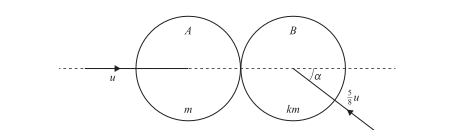
Two uniform smooth spheres A and B of equal radii have masses \(m\) and \(km\) respectively. The two spheres are moving on a horizontal surface with speeds \(u\) and \(\frac58u\) respectively. Immediately before the spheres collide, A is travelling along the line of centres, and B’s direction of motion makes an angle \(\alpha\) with the line of centres. The coefficient of restitution is \(\frac23\) and \(\tan\alpha=\frac34\). After the collision, the direction of motion of B is perpendicular to the line of centres.
(a) Find \(k\).
(b) Find the loss in the total kinetic energy.
Show answer
(a) Let \(v_A\) be A’s final line component. Since B’s final line component is zero,
\[ mu-km\left(\frac58u\right)\cos\alpha=mv_A, \]
and restitution gives
\[ 0-v_A=\frac23\left(u\cos\alpha+\frac58u\right). \]
Using \(\cos\alpha=4/5\) gives \(\boxed{k=4}\).
(b) B’s final speed is its unchanged perpendicular component:
\[ v_B=\frac58u\sin\alpha=\frac38u, \]
and \(v_A=-u\). Hence
\[ K_{\rm before}=\frac{41}{32}mu^2, \qquad K_{\rm after}=\frac{25}{32}mu^2. \]
The loss is \(\boxed{\frac12mu^2}\).2022 October/November · 9231/32 · Question 7
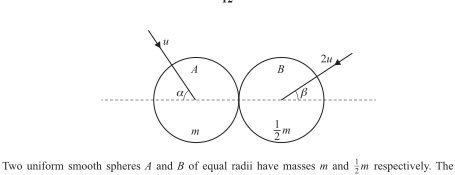
Two uniform smooth spheres A and B of equal radii have masses \(m\) and \(\frac12m\) respectively. The two spheres are moving on a horizontal surface when they collide. Immediately before the collision, A is travelling with speed \(u\) at angle \(\alpha\) to the line of centres and B is travelling with speed \(2u\) at angle \(\beta\) to the line of centres. The coefficient of restitution is \(\frac58\) and \(\alpha+\beta=90^\circ\).
(a) Find the component of the velocity of B parallel to the line of centres after the collision, in terms of \(u\) and \(\alpha\).
The direction of motion of B after the collision is parallel to the direction of motion of A before the collision.
(b) Find \(\tan\alpha\).
Show answer
(a) Put \(w\) and \(v\) for the final line components of B and A. Momentum and restitution, with \(\cos\beta=\sin\alpha\), give
\[ \boxed{w=\frac23u\left(\frac14\sin\alpha+\frac{13}{8}\cos\alpha\right)}. \]
(b) B’s unchanged perpendicular component is \(2u\sin\beta=2u\cos\alpha\). The condition on its final direction gives
\[ \tan\alpha=\frac{2u\cos\alpha}{w}. \]
Substitution reduces to \((2\tan\alpha-3)(\tan\alpha+8)=0\). The physical solution is
\[ \boxed{\tan\alpha=\frac32}. \]2023 May/June · 9231/31 and 9231/32 · Question 1
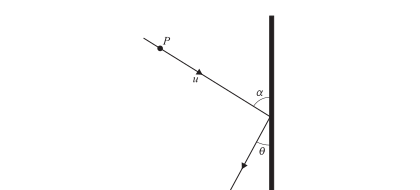
A particle P of mass \(m\) is moving with speed \(u\) on a fixed smooth horizontal surface. It collides at an angle \(a\) with a fixed smooth vertical barrier. After the collision, P moves at an angle \(i\) with the barrier, where \(\tan i=\frac12\). The coefficient of restitution between P and the barrier is \(e\). P loses 20% of its kinetic energy as a result of the collision.
Find \(e\).
Show answer
- Parallel component is unchanged and \(\tan i=e\tan a\).
- The fractional loss is \(\sin^2a(1-e^2)=0.2\).
- Put \(\tan a=t\), so \(e=1/(2t)\): \[\frac{t^2-1/4}{1+t^2}=\frac15.\]
- Hence \(t=3/4\) and \[\boxed{e=\frac23}.\]
2023 May/June · 9231/33 · Question 4
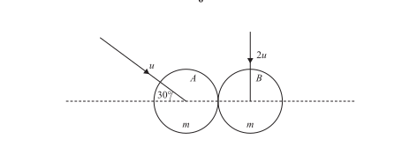
Two identical smooth uniform spheres A and B each have mass \(m\). The spheres are moving on a smooth horizontal surface when they collide with speeds \(u\) and \(2u\) respectively. Immediately before the collision, A’s direction of motion makes an angle of \(30^\circ\) with the line of centres, and B’s direction of motion is perpendicular to the line of centres. After the collision, A and B are moving in the same direction. The coefficient of restitution is \(e\).
(a) Find \(e\).
(b) Find the loss in total kinetic energy.
Show answer
The perpendicular components are unchanged: \(u/2\) for A and \(2u\) for B. Let \(U,V\) be the final line components.
- Since the final velocity vectors have the same direction, \(V=4U\).
- Momentum along the line gives \(U+V=u\cos30^\circ\).
- Therefore \(U=\frac{\sqrt3}{10}u\) and \(V=\frac{2\sqrt3}{5}u\).
- Restitution gives \[e=\frac{V-U}{u\cos30^\circ}=\boxed{\frac35}.\]
The initial kinetic energy is \(\frac52mu^2\) and the final kinetic energy is \(\frac{119}{50}mu^2\), so
\[ \boxed{\text{loss}=\frac3{25}mu^2}. \]2023 October/November · 9231/31 and 9231/33 · Question 1
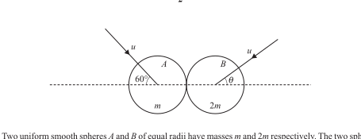
Two uniform smooth spheres A and B of equal radii have masses \(m\) and \(2m\) respectively. The spheres move with equal speeds \(u\) on a smooth horizontal surface. Immediately before the collision, A’s direction makes an angle of \(60^\circ\) with the line of centres and B’s direction makes an angle \(i\) with the line of centres. The coefficient of restitution is \(e\). After the collision, the component of the velocity of A along the line of centres is \(v\) and B moves perpendicular to the line of centres. Sphere A has twice as much kinetic energy as sphere B.
(a) Show that \(v=\frac12u(4\cos i-1)\).
(b) Find \(\cos i\).
Show answer
(a) Use unchanged perpendicular components and momentum along the line of centres. Since B’s final line component is zero,
\[ v=u\cos60^\circ+2u\cos i=\boxed{\frac12u(4\cos i-1)}. \]
(b) The kinetic-energy condition is
\[ v^2+u^2\sin^260^\circ=4u^2\sin^2i. \]
Substituting the expression for \(v\) gives \(8\cos^2i-2\cos i-3=0\). The physical solution is
\[ \boxed{\cos i=\frac34}. \]2023 October/November · 9231/32 · Question 4
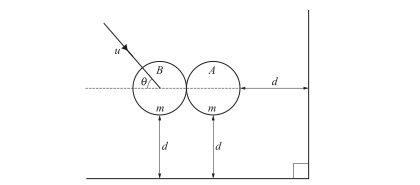
Two smooth vertical walls meet at right angles. The smooth sphere A, with mass \(m\), is at rest on a smooth horizontal surface and is at a distance \(d\) from each wall. An identical smooth sphere B is moving on the horizontal surface with speed \(u\) at an angle \(i\) with the line of centres when the spheres collide. After the collision, the spheres take the same time to reach a wall. The coefficient of restitution between the spheres is \(\frac12\).
(a) Find \(\tan i\).
(b) Find the percentage loss in total kinetic energy.
Show answer
(a) Equal travel times and equal distances give the final component of A towards its wall as \(u\sin i\). Momentum and restitution along the line of centres then give
\[ 2\sin i=(1+e)\cos i. \]
With \(e=1/2\),
\[ \boxed{\tan i=\frac34}. \]
(b) Substituting the final components into the kinetic-energy expression gives
\[ \boxed{24\%}. \]2024 May/June · 9231/31 and 9231/32 · Question 1
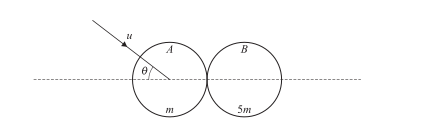
Two smooth uniform spheres A and B of equal radii have masses \(m\) and \(5m\) respectively. Sphere A is moving with speed \(u\) when it collides with stationary B. Immediately before the collision, A’s direction makes an angle \(i\) with the line of centres. After the collision, the kinetic energies of A and B are equal. The coefficient of restitution is \(\frac12\).
Find \(\tan i\).
Show answer
Along the line of centres, for B initially at rest,
\[ V=\frac{3}{2(1+5)}u\cos i=\frac14u\cos i, \qquad U=-\frac14u\cos i. \]
A’s perpendicular component remains \(u\sin i\). Equating the two kinetic energies gives
\[ U^2+u^2\sin^2i=5V^2 \quad\Longrightarrow\quad \sin^2i=\frac14\cos^2i. \]
Therefore \(\boxed{\tan i=\frac12}\).2024 May/June · 9231/33 · Question 1
Two smooth uniform spheres A and B of equal radii have masses \(m\) and \(2m\) respectively. They move with speeds \(u\) and \(\frac12u\). Immediately before the collision, A’s direction is along the line of centres and B’s direction makes an angle \(i\) with the line of centres. After the collision, A’s direction is reversed and its speed is reduced to \(\frac14u\). B’s direction again makes an angle \(i\) with the line of centres, on the opposite side, and its speed is unchanged.
Find the coefficient of restitution.
Show answer
Using conservation of momentum along the line of centres, with the directions shown in the original question, gives \(\cos i=5/8\). Newton’s experimental law then gives
\[ e=\frac{\frac12u\cos i+\frac14u}{u+\frac12u\cos i} =\boxed{\frac37}. \]2024 October/November · 9231/32 · Question 3
Two identical smooth uniform spheres A and B, each of mass \(m\), move with speeds \(2u\) and \(3u\) respectively. Immediately before collision, A’s direction makes an angle \(i\) with the line of centres and B’s direction is perpendicular to that of A. After the collision, B moves perpendicular to the line of centres. The coefficient of restitution is \(\frac13\).
(a) Find \(\tan i\).
(b) Find the total loss of kinetic energy.
(c) Find, in degrees, the angle through which A’s direction is deflected.
Show answer
Taking components along and perpendicular to the line of centres:
- The initial components give \(2u\cos i\) and \(3u\sin i\) in the line direction, with the appropriate signs from the original diagram.
- Since B’s final line component is zero, momentum and restitution give \[\boxed{\tan i=\frac43}.\]
- The final components are \(\mathbf v_A=-\frac65u\mathbf i+\frac85u\mathbf j\) and \(\mathbf v_B=\frac95u\mathbf j\).
- Hence \[K_{\rm before}=\frac{13}{2}mu^2,\qquad K_{\rm after}=\frac{181}{50}mu^2,\] so the loss is \(\boxed{\frac{72}{25}mu^2}\).
- The angle between A’s initial vector \((\frac65,\frac85)\) and final vector \((-\frac65,\frac85)\) is \[\boxed{73.7^\circ\text{ (approximately)}}.\]
2025 May/June · 9231/31 and 9231/32 · Question 6
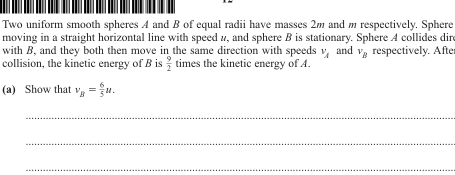
Two uniform smooth spheres A and B of equal radii have masses \(2m\) and \(m\) respectively. Sphere A is moving in a straight horizontal line with speed \(u\), and sphere B is stationary. Sphere A collides directly with B, and they then move in the same direction with speeds \(v_A\) and \(v_B\). After the collision, the kinetic energy of B is \(\frac92\) times the kinetic energy of A.
(a) Show that \(v_B=\frac65u\).
Sphere B then collides with a fixed vertical barrier. Immediately before the collision, B’s direction makes an angle \(a\) with the barrier. Immediately after, it makes an angle \(b\) with the barrier. The coefficient of restitution between B and the barrier is \(\frac45\). As a result of the collision, the speed of B is reduced to \(\frac{12\sqrt5}{25}u\).
(b) Find \(\sin(a+b)\).
Show answer
(a) From the kinetic-energy ratio,
\[ \frac{\frac12mv_B^2}{\frac12(2m)v_A^2}=\frac92 \quad\Longrightarrow\quad v_B=3v_A. \]
Momentum gives \(2u=2v_A+v_B\), so \(\boxed{v_B=\frac65u}\).
(b) Resolve parallel and perpendicular to the barrier:
\[ \frac65u\cos a=\frac{12\sqrt5}{25}u\cos b, \qquad \frac45\frac65u\sin a=\frac{12\sqrt5}{25}u\sin b. \]
The speed equation gives \(\sin^2a=5/9\) and \(\cos^2a=4/9\). Therefore
\[ \sin(a+b)=\boxed{\frac1{\sqrt5}}. \]2025 May/June · 9231/33 · Question 6
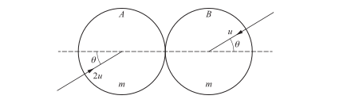
Two identical uniform smooth spheres A and B, each with mass \(m\), are moving on a horizontal surface with speeds \(2u\) and \(u\) respectively when they collide. Immediately before the collision, the spheres are moving parallel to each other in opposite directions such that their directions of motion each make an angle \(\theta\) with the line of centres. As a result of the collision, B moves in a direction perpendicular to its initial direction. The coefficient of restitution is \(e\).
(a) Find an expression for \(\tan\theta\) in terms of \(e\).
As a result of the collision, A moves in a direction perpendicular to the line of centres.
(b) Find the value of \(\theta\).
Show answer
Let \(U,V\) be the final components along the line of centres. The perpendicular components are unchanged.
(a)
- Momentum along the line of centres: \[2u\cos\theta-u\cos\theta=U+V.\]
- Newton’s experimental law: \[V-U=3eu\cos\theta.\]
- The condition that B’s final velocity is perpendicular to its initial velocity gives \(V=u\sin^2\theta/\cos\theta\).
- Combining these equations gives \[\boxed{\tan^2\theta=\frac{1+3e}{2}}. \]
(b) If A’s final line component is zero, restitution gives \(V=3eu\cos\theta\), while momentum gives \(V=u\cos\theta\). Thus \(e=1/3\). Substitution into part (a) gives
\[ \boxed{\theta=45^\circ}. \]2025 October/November · 9231/31 and 9231/33 · Question 1
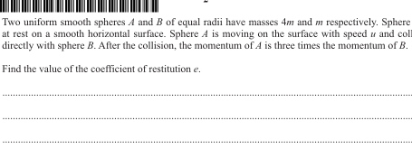
Two uniform smooth spheres A and B of equal radii have masses \(4m\) and \(m\) respectively. Sphere B is at rest on a smooth horizontal surface. Sphere A is moving with speed \(u\) and collides directly with B. After the collision, the momentum of A is three times the momentum of B.
Find the coefficient of restitution \(e\).
Show answer
Let the final speeds be \(v_A,v_B\). Then \(4mv_A=3mv_B\), so \(v_B=\frac43v_A\). Momentum gives \(4u=4v_A+v_B\), hence \(v_A=\frac34u\) and \(v_B=u\). Therefore
\[ e=\frac{v_B-v_A}{u}=\boxed{\frac14}. \]2025 October/November · 9231/32 · Question 5
Two uniform smooth spheres A and B of equal radii are on a horizontal surface. They have masses \(m\) and \(km\) respectively. Sphere A is moving with speed \(u\) at an angle \(\alpha\) with the line of centres when it collides with stationary sphere B. Immediately after the collision, sphere A moves with speed \(v\) at an angle \(2\alpha\) with the line of centres. It is given that \(\tan\alpha=\frac34\).
(a) Find \(v\) in terms of \(u\).
(b) Find the coefficient of restitution between the spheres in terms of \(k\).
Show answer
(a) The component perpendicular to the line of centres is unchanged:
\[ u\sin\alpha=v\sin2\alpha=2v\sin\alpha\cos\alpha. \]
Therefore \(v=u/(2\cos\alpha)=\boxed{\frac58u}\).
(b) Along the line of centres, momentum gives the component of B after impact as \(\frac{5}{8k}u\). Hence
\[ e=\frac{\frac{5}{8k}u-\frac58u\cos2\alpha}{u\cos\alpha}. \]
Using \(\cos\alpha=4/5\) and \(\cos2\alpha=7/25\) gives
\[ \boxed{e=\frac{25/k-7}{32}}. \]2024 October/November · 9231/31 and 9231/33 · Question 7
A particle P is projected with speed \(u\) at an angle \(\tan^{-1}(4/3)\) above the horizontal from a point O on a horizontal plane and moves freely under gravity. When P is moving horizontally, it strikes a smooth inclined plane at A. The plane is inclined to the horizontal at angle \(a\). As a result of the impact, P moves vertically upwards. The coefficient of restitution between P and the inclined plane is \(e\).
(a) Show that \(e\tan^2a=1\).
In its subsequent motion, the greatest height reached by P above A is \(\frac3{16}\) of the vertical height of A above the horizontal plane.
(b) Find \(e\).
Show answer
(a) Resolve parallel and perpendicular to the plane. If the speed immediately after impact is \(w\),
\[ u\cos a=w\sin a,\qquad e\,u\sin a=w\cos a. \]
Eliminating \(w\) gives \(\boxed{e\tan^2a=1}\).
(b) The vertical speed after impact is \(w=u\cot a\). The given launch angle and the height condition give
\[ \frac{w^2}{2g}=\frac3{16}\frac{(u\sin(\tan^{-1}(4/3)))^2}{2g}, \]
so \(w/u=\sqrt3/5\). Therefore \(\cot^2a=3/25\) and
\[ \boxed{e=\frac3{25}}. \]2025 October/November · 9231/31 and 9231/33 · Question 6
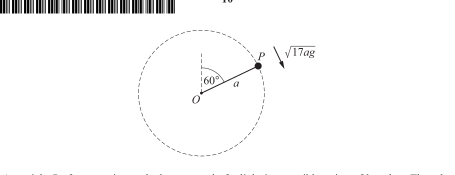
A particle P of mass \(m\) is attached to one end of a light inextensible string of length \(a\), the other end being fixed at O. Initially P is held with the string taut at an angle of \(60^\circ\) to the upward vertical and is projected perpendicular to the string downwards with speed \(\sqrt{17ag}\). It moves in a vertical circle. At the lowest point P collides with a stationary particle Q.
(a) Find the speed of P immediately before the collision.
As a result of the collision, P rebounds and moves back along a circular path. The string becomes slack when P reaches the point vertically above O.
(b) Find the speed of P immediately after the collision.
The mass of Q is \(km\) and the collision is perfectly elastic.
(c) Find \(k\).
Show answer
(a) Conservation of energy from the initial position to the lowest point gives
\[ \frac12m(\sqrt{17ag})^2+\frac32mag=\frac12mv^2, \]
so \(\boxed{v=\sqrt{20ag}}\).
(b) At the top of the rebound circle, \(T=0\), so \(V^2=ag\). Energy from the bottom to the top gives
\[ \frac12mw_P^2=\frac12m(ag)+2mga, \]
and hence \(\boxed{w_P=\sqrt{5ag}}\).
(c) Let Q’s speed after impact be \(w_Q\). Momentum and restitution give
\[ mv=kmw_Q-mw_P, \qquad w_P+w_Q=v. \]
Using \(v=\sqrt{20ag}\) and \(w_P=\sqrt{5ag}\) gives \(\boxed{k=3}\).5. 本章检查清单
- 碰撞题先选定 positive direction，并持续使用 signed velocities；
- 不能把 speed of approach 写成两个速度的无符号相减；
- smooth plane 或 smooth sphere 的 impulse 方向沿 contact normal；
- line-of-centres component 才使用 restitution；
- perpendicular component 在 smooth impact 中保持不变；
- \(e=0\) 表示最大能量损失，\(e=1\) 表示 perfectly elastic；
- 最后检查答案是否符合 \(0\le e\le1\) 以及题目给定的运动方向。